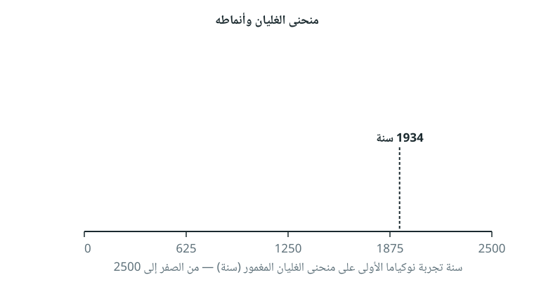

منحنى الغليان وأنماطه
Boiling Curve
علاقة بين التدفق الحراري المنقول وفرق الحرارة الزائد على سطح ساخن مغمور في سائل، تظهر عليها ثلاثة أنماط متمايزة وقمتان: تدفق حرج أعلى وقيمة دنيا عند نقطة لايدنفروست.
منحنى الغليان هو تمثيل التدفق الحراري المنقول من سطح ساخن مغمور في سائل مقابل فرق الحرارة بين السطح ودرجة تشبّع السائل، ويُسمّى فرق الحرارة الزائد. قاسه نوكياما سنة 1934 بسلك معدني مسخّن كهربيًّا، فظهر أن التدفق يزداد مع الفرق الزائد حتى يبلغ قمة ثم يهبط، وأن السلك ينصهر إن استمر التسخين بعد القمة. ثم أُعيدت التجربة بضبط درجة حرارة السطح بدل التدفق، فظهر أن للمنحنى قمة دنيا أيضًا، وأنه يمرّ بثلاثة أنماط: غليان نووي تتكوّن فيه فقاعات عند مواقع النوى وتنفصل عن السطح، وغليان انتقالي يتناوب فيه السائل والجفاف الموضعي على السطح فيسوء الأداء كلما زاد الفرق، وغليان غشائي يغطي فيه غشاء بخار مستقر السطح فيصبح البخار عائقًا. والقمة العليا تُسمّى التدفق الحراري الحرج، وهي حدّ التصميم لأن تجاوزها بمنبع ذي تدفق مسلّط يرفع درجة حرارة السطح بسرعة، والقيمة الدنيا تُسمّى نقطة لايدنفروست. وأهم ما يميّز المنحنى أن شكله يختلف بحسب المتغير المستقل: تحت تدفق مسلّط يقفز السطح فوق النمط الانتقالي، وتحت درجة حرارة مضبوطة يُرسم النمط الانتقالي كاملًا.
كيف تعمل الظاهرة؟
في النمط النووي تتكوّن الفقاعات عند نوى موجودة في تجاويف السطح، وتنمو ثم تنفصل، وحركتها تُحرّك السائل المجاور فتغسل السطح بحرارة جديدة، ولهذا يرتفع التدفق بسرعة مع الفرق الزائد. وكلما زاد الفرق زاد عدد مواقع التنوية وتزاحمت الفقاعات، حتى تبدأ الفقاعات بالاندماج وتكوين أعمدة بخار تحجب السائل عن أجزاء من السطح. عند القمة يصبح حجب البخار مساويًا في أثره لزيادة الفرق، فيتوقف التدفق عن النمو. وبعد القمة يغلب البخار على أجزاء متزايدة من السطح، فيتناوب السائل والجفاف الموضعي، ويسوء الأداء كلما زاد الفرق. وفي النمط الغشائي يكتمل الغشاء البخاري ويستقر، فتصبح الحرارة تعبر بخارًا موصلًا ضعيفًا، ويرتفع التدفق من جديد لكن بميل أقل بكثير من النمط النووي.
العلاقة بالأرقام
المنحنى يُرسم بـq″ بوحدة واط/متر مربع مقابل ΔT_sat بالكلفن عند ضغط ثابت. وفي الماء عند الضغط الجوي تبلغ القمة عند فرق زائد في حدود ثلاثين كلفن، وهو موضع التدفق الحراري الحرج. والفرق بين النمطين ليس في مقدار التدفق وحده بل في ميل المنحنى: في النووي يكون الميل موجبًا كبيرًا، وفي الانتقالي سالبًا، وفي الغشائي موجبًا صغيرًا. ولهذا فإن منبعًا يسلّط تدفقًا ثابتًا يتجاوز القمة لا يجد حالة توازن على الفرع الهابط، فينتقل السطح إلى النمط الغشائي عند فرق أكبر بكثير.
مفاهيم متقاربة
يُفصل منحنى الغليان عن ارتباطات الغليان النووي التي تعطي التدفق عند فرق معيّن داخل النمط النووي وحده، ولا تصف القمة ولا ما بعدها. ويُفصل عن التدفق الحراري الحرج بوصفه نقطة واحدة على المنحنى لا المنحنى كله، فالحرج حدّ أعلى والنمط الانتقالي فرع هابط. ويُفصل عن الغليان الغشائي بوصفه نمطًا ثالثًا لا مرادفًا للحرج. ويُفصل عن منحنى التبريد الذي يُرسم بدرجة الحرارة مقابل الزمن، فذاك يصف مسارًا زمنيًّا وهذا يصف حالة مستقرة عند كل نقطة.
حدود التطبيق
الحد الأول أن شكل المنحنى يعتمد على المتغير المستقل: تحت تدفق مسلّط لا يُرسم الفرع الانتقالي لأن السطح يقفز فوقه، وتحت درجة حرارة مضبوطة يُرسم كاملًا، فمقارنة منحنيين من مصدرين مختلفين بلا معرفة طريقة الضبط مقارنة غير صحيحة. والحد الثاني أن موضع القمة يتغير مع الضغط ووجود الغازات غير المتكثفة وخشونة السطح وترطيبه، فالقيمة المنشورة لسطح معيّن لا تُنقل إلى سطح آخر بلا تحقق. والحد الثالث أن ارتباطات النمط الانتقالي لم تُوفَّق، فقد صُرّح في المصدر أن منحنياته تختلف اختلافًا واسعًا وأن عوامل التأثير فيه كثيرة، فالنمط الانتقالي يُقرأ من قياس لا من ارتباط عام.

| الكمية | القيمة | المصدر |
|---|---|---|
| سنة تجربة نوكياما الأولى على منحنى الغليان المغمور | 1934 سنة | [1] |
| عدد الأنماط التي صُنّف إليها المنحنى تحت درجة حرارة سطح مضبوطة | 3 نمط | [1] |
| عدد الأوراق المنشورة على منحنيات الغليان المغمور بعد ثمانين سنة من تجربة نوكياما | 2182 ورقة | [1] |
| موضع التدفق الحراري الحرج في الماء عند الضغط الجوي | 30 كلفن | [1] |
المصادر
- 1 3D direct numerical simulation of the entire pool boiling curve from onset of nucleation to critical heat flux through transition boiling to film boiling — Advances in Engineering (2019). advanceseng.com/entire-pool-boiling-curve-onset-nucleation-critical-heat-flux-transition-boiling-film-boiling/ · اطُّلع عليه 2026-11-28
- 2 3D simulations of pool boiling above smooth horizontal heated surfaces by a phase-change lattice Boltzmann method — Ma & Cheng — International Journal of Heat and Mass Transfer — Elsevier (2019). doi.org/10.1016/j.ijheatmasstransfer.2018.11.103 · اطُّلع عليه 2026-11-28
استشهد بهذا المصطلح
الصيغتان مبنيتان من بيانات الصفحة نفسها: العنوان والتاريخ ورابط النسخة المنشورة.
منحنى الغليان وأنماطه — Boiling Curve. (2026). ديوان المعرفة — انفراد. https://infiradev.com/diwan/terms/term-boiling-curve.html
@misc{term-boiling-curve2026,
title = {منحنى الغليان وأنماطه},
titleaddon = {Boiling Curve},
howpublished = {{ديوان المعرفة — انفراد} — مرجع علمي عربي},
year = {2026},
url = {https://infiradev.com/diwan/terms/term-boiling-curve.html},
urldate = {2026-11-28},
note = {مراجعة علمية: Abdullah Al-Huwaidi}
}
راجعه: Abdullah Al-Huwaidi · 2026-11-28 · آخر تحديث 2026-11-28